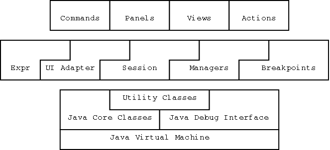

JSwat is made up of several major sets of components: commands, panels, views, actions, breakpoints, managers, the session, the interface adapter, and the expression evaluator. Additionally there are a number of utility classes which support the primary components.

Pictured above we see all of the modules. The position of the blocks indicates dependence. For instance, the Session does not depend on any of the views, actions, panels, or commands, as those are above the Session in the module hierarchy. However, the Session makes use of the managers, breakpoints, and interface adapter. And by the same token, the other components rely on the Session (and possibly other components in the same layer). All of the components may depend on the Java Debug Interface and/or the Java core classes, as well as the utility classes in JSwat.
You may have noticed that the borders between the commands, panels, views, and actions are straight lines. This is to indicate that these components do not rely on one another. For instance, the panels should never call on the views, or vice versa. This is to protect what little modularity exists in JSwat, so that it remains possible to remove one or the other components. For instance, there may be a release of JSwat that does not have the commands, or does not have the actions (or panels or views, for that matter). Thereby, it is necessary to firewall these components from one another to maintain this modularity.